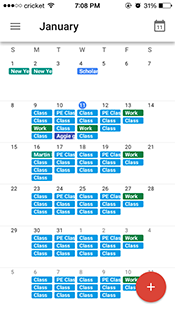
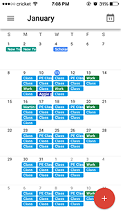

January 17, 2017
Blog 1: User Interface Evaluation
An user interface that I often use is the Google Calendar mobile application. I find this application extremely useful in keeping my class, work and extracurricular activities schedules. The interface is easy to learn and use. When first opening the calendar, I am directed straight to my schedule so I can see what activities I have going on during the day. I can pick the color of the activity when I input them into the calendar which makes it easy for me to organize the types of events, ie. green for work, light blue for class, dark blue for meetings, etc. I can also click on the month to get a drop schedule of the month.


By clicking on the menu bar at the top left corner, I can easily choose which format I would like to view my schedule in. I can then click the big, red button on the bottom left corner to add something to my schedule. Three options appear and I can choose whichever I would like to add. The menu and add icon is an effective user interface design because it is straightforward and a new user can easily navigate through it.
 


The schedule input menu is also well-designed because it has every option a user would need to keep track of their schedule. Name of the event can be inputted right away at the top of the screen, along with choosing which calendar the event belongs to. You can set a recurring event easily by using the "Custom Repeat" option. I find this element extremely useful because most activities that I have going on are on a quarterly basis. To be able to set my schedule and repeat certain items until a specific date is very useful and efficient. You can also easily turn any calendar on or off by unchecking the boxes next to it.


On top of keeping track of everything for me, this application is well-designed. The colors I can choose from are visually appealing and everything is clearly marked. Google calendar also has the option of sharing your calendar with others so that you may view their schedule as well. This is convenient when trying to schedule meet-ups with friends or family. This application has helps me keep track of where I need to be, thus improving my lifestyle tremendously.